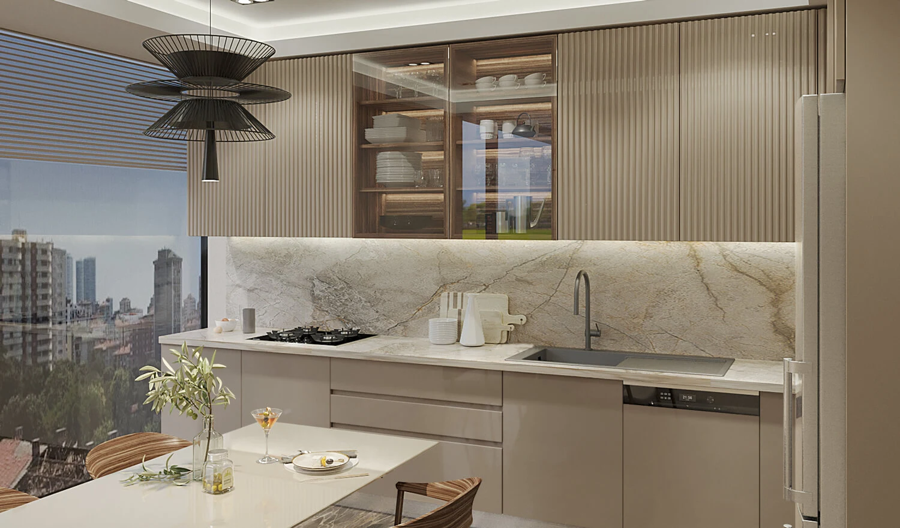

PROJECT OVERVIEW
Elite Erenköy
A four-block residential development in Erenköy, Kadıköy. The published project brings 251 residences together with commercial spaces and landscaped social areas in the Bağdat Caddesi neighbourhood.
Blocks4
Published homes251
Commercial units20
Photo gallery

Official architectural illustrations; these images do not show the current construction condition.
EVERYDAY LIVING
Living spaces
The published amenities include an indoor pool, fitness room, sauna, steam room, children’s areas, walking paths and multi-purpose sports courts.
LOCATION AND ACCESS
Erenköy · Kadıköy · Istanbul
Dr. Mithat Süer Sokak, Erenköy, Kadıköy. Explore the surrounding Bağdat Caddesi neighbourhood and the exact apartment’s outlook during a visit.
YOUR NEXT STEP
Choose your home
Request the current apartment selection, price and payment options. Compare the exact unit, view and included services before arranging your purchase.